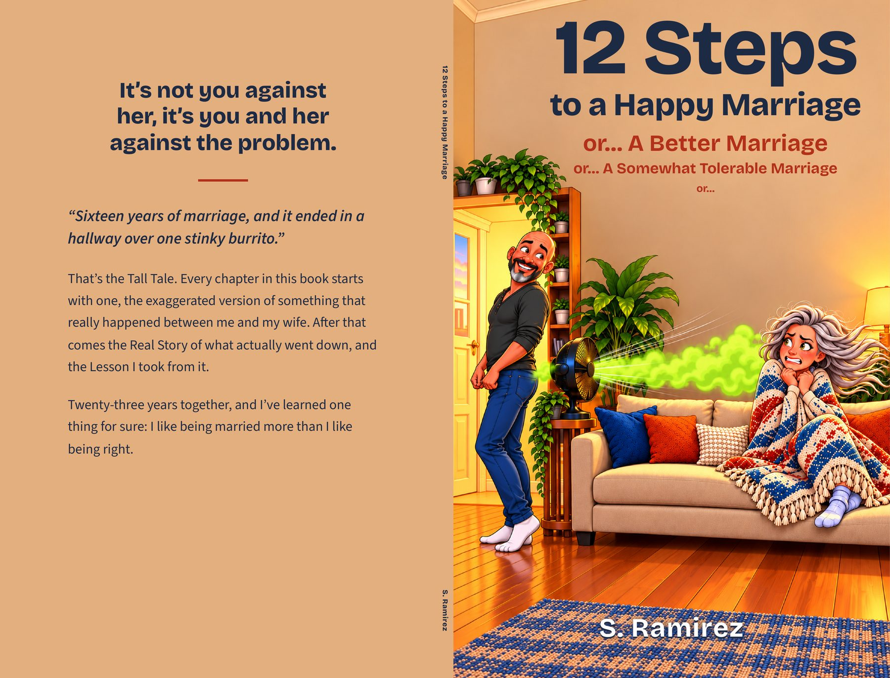

About the Book
It’s not you against her, it’s you and her against the problem.
“Sixteen years of marriage, and it ended in a hallway over one stinky burrito.”
That’s the Tall Tale. Every chapter in this book starts with one, the exaggerated version of something that really happened between me and my wife. After that comes the Real Story of what actually went down, and the Lesson I took from it.
Twenty-three years together, and I’ve learned one thing for sure: I like being married more than I like being right.
What Is Inside
The Burp That Almost Ended Everything, The Fan of Doom, The Snot Rocket Incident, The Thermostat Wars, The Laundry Dilemma, The After-Shower Ritual, The Watery Demise, Dishes From Nowhere, GPS vs. Spouse, The Wrong Groceries, She’s Not Perfect, and Well, Maybe She’s a Little Perfect, plus a bonus story.
Book Details
Category: Standalone
Genre: Humor / Marriage & Relationships / Personal Essays
Formats: Paperback, hardcover, and Kindle eBook
Edition: Second Edition, 2025
Publisher: Orange Cat Press
Status: Available now on Amazon
Buy on Amazon
Full Wrap Cover
